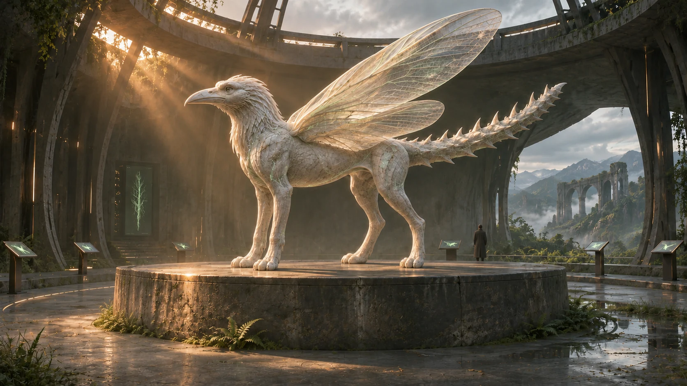

MODERN ÇAĞ GRİFONU / 2025 — 2076
ALARM
Beş karakter. Tek beden.
Post-apokaliptik bir gözlem sistemi. Beş hayvan, bugünün tehditleri karşısında hayatta kalmak için gereken yetenekleri tek bir bedende bir araya getirir. Her kanal, güncel bir sorunu grifonun bedenindeki bir parçaya bağlar.
GÖZLEM KANALLARI
Bir karakter seç. Kaynağı ve bedendeki karşılığını izle.



2076 gözlemevi
Grifon. Ortam. Ses. 360° inceleme.
GÖZLEMEVİNE GİRGrifonun kaydı
Tarihsel izler, görseller ve kaynaklar.
KAYDI AÇVeriden bedene
Kuyruk, gövde, kanatlar, baş ve gözler. Beş ayrı kanal, aynı varlığın farklı parçalarını görünür kılar. Kaynaklardan gelen işaretler ile heykelin tepkileri arasındaki ilişki, eserin sanatsal yorumuyla kurulur.
Her tablette bir kanal açılabilir. Merkez ekran heykeli, dikey ekran ise grifonun tarihsel izlerini bir araya getirir.
Kayıt ve zaman
Kaynaklar yaklaşık yirmi dakikada bir yeniden sorgulanır. Akan açıklamalar yeni ölçüm değildir. Her kanalda kaynağın adı, kapsamı, birimi ve kayıt zamanı görünür. Eski veya eksik kayıtlar ayrıca belirtilir.
Alarm eşikleri henüz etkin değildir. “Sinyali dene” seçeneği, açıkça etiketlenmiş bir simülasyon açar.
KAYNAKLAR VE KAPSAM
- Molok / Moloch / Open-Meteo
İstanbul için yüzey toprak nemi modeli. - Çita / Cheetah / Energy-Charts
Almanya elektrik yükü. - Hamam böceği / Cockroach / Safecast
Belirli bir cihazın tek ölçüm kaydı. - Kuzgun / Raven / Wikimedia
İngilizce Wikipedia düzenlemelerinden bir örneklem. - Goril / Gorilla / GDELT
Çatışma ve kitlesel şiddet olarak kodlanan haber kayıtları.